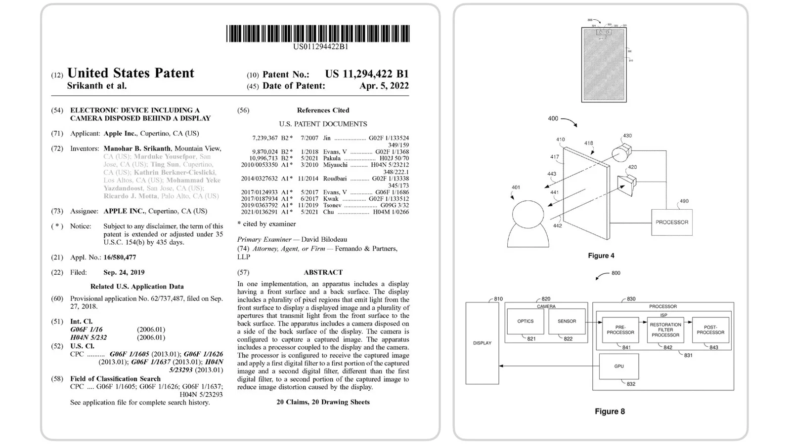
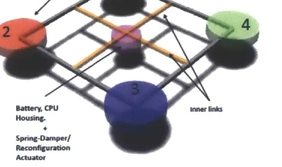

Some questions
stay with you.
Perspectives drawn from the work: how a signal becomes an image, how a system becomes an experience, and how an idea survives its first objections.
The photographic standard
A mathematically recovered image is only the beginning. The photograph still has to feel right.

Software-defined sensing
What changes when sensing capability is designed across hardware and computation?

The cost of zero to one
The work between a question that sounds impossible and an architecture that can be built.

For curious minds
A screen, a camera, a beam of light. A way into the ideas without needing the vocabulary first.